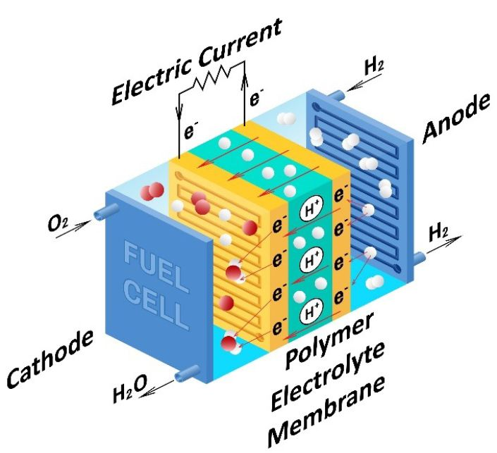
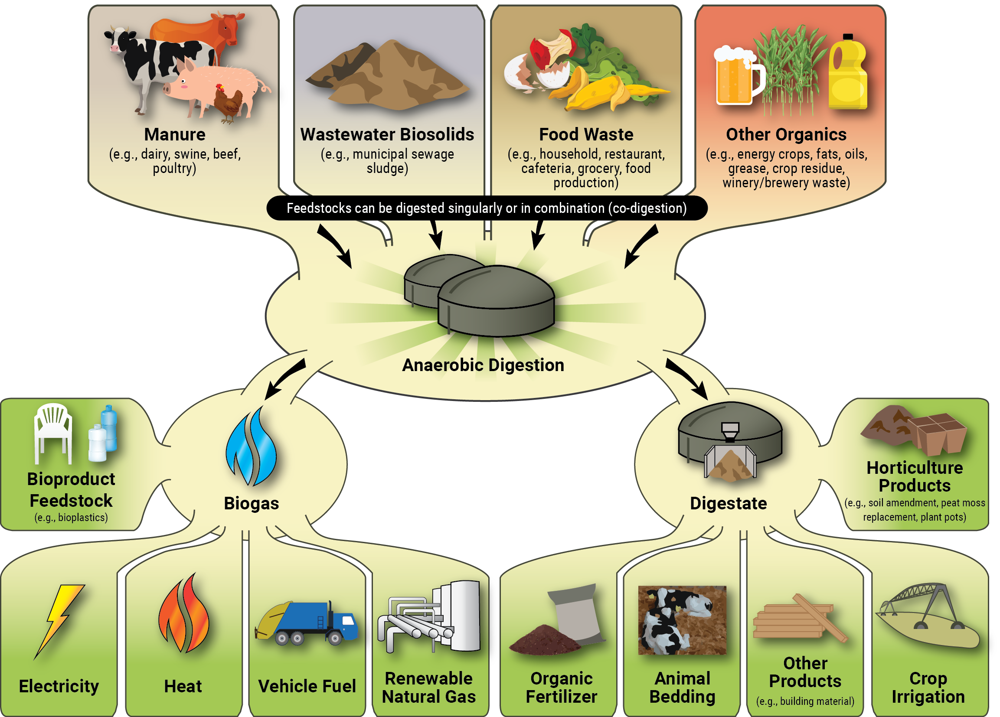

A fuel cell directly turns hydrogen combustion into electricity achieving 40-60% efficiency

When waste becomes useful. Microbes called methanogens turn waste into methane gas to be burned and digestates used for fertilizers

Carbon fiber is stronger and stiffer than steel, it is lighter than steel; making it the ideal manufacturing material for many parts.